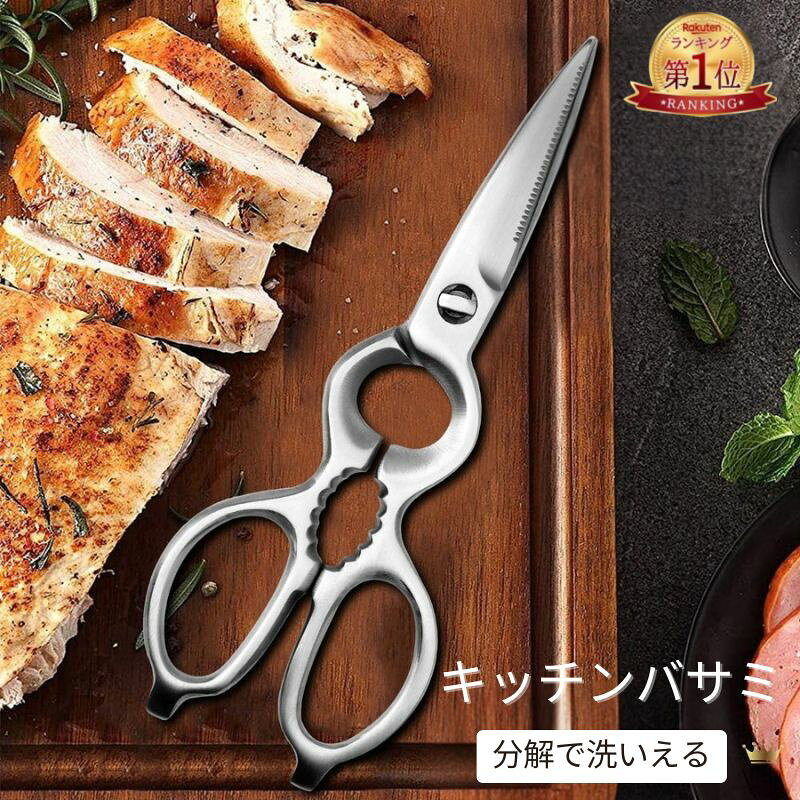

キッチン
キッチンバサミのおすすめ3選と選び方｜軽さと衛生面で比較
2026-11-27

※本記事には商品プロモーション(アフィリエイト広告)を含みます【PR】
キッチンバサミは毎日の調理で使う頻度が高い道具のため、重さや洗いやすさ、栓抜きなどの付加機能の違いが使い勝手に直結します。ここでは、分解して洗えるかどうかという衛生面、本体の重量、刃や持ち手の工夫という3つの視点から、人気の3点を比べてご紹介します。
軽さと分解洗浄のしやすさを両立したタイプ
キッチンバサミ ステンレス製 分解して洗えるは、全長20.5cm・刃渡り7cmのオールステンレス仕様で、重量は約140gとされています。分解できる構造のため使用後は細部まで洗浄しやすく、食洗機にも対応している点が特徴です。切る以外に栓抜きや殻割り、蓋開けなどの用途にも使えるとされており、調理中にほかの道具に持ち替える手間を減らせそうです。開発段階で「オールステンレスは重い」という声を踏まえ、薄い形状で軽量化を図ったとされているため、重さを気にする方は候補にしやすいタイプといえます。レビュー件数は6,013件、平均評価4.57と、3点の中でも評価件数が多い点も参考になります。

軽さを追求したコンパクトタイプ
《 》キャップ付き★キッチンバサミ 分解は、atRiseというブランドのロングセラー商品から新たに登場したSサイズで、2024年・2025年の楽天年間ランキングを受賞したとされています。「少し重い」という声に向き合い開発された商品で、オールステンレス製ながら重量は約84gと、3点の中でもっとも軽い点が特徴です。軽さを重視する場合、手首への負担が気になる方や、毎日何度も使う方には扱いやすいサイズといえそうです。分解できる仕様も備えており、洗いやすさの面でも配慮されています。平均評価は4.54、レビュー件数は2,865件となっています。

食材が滑りにくい刃の工夫があるタイプ
キッチンはさみ キッチンバサミ ハサミは、刃にギザギザのマイクロエッジング加工が施されており、食材が滑りにくく断ち切りやすいよう工夫されているとされています。全長20.5cm・刃渡り7.5cmで、重さは135gとオールステンレスながら疲れにくい軽量設計とされています。分解して洗える仕様のため衛生面にも配慮されており、栓抜きや蓋開け、缶開け、プルタブ起こしなど多機能に使える点も特徴です。化粧箱付きで箱のまま贈りやすい点も、ギフト用途を考える場合には選ぶポイントになりそうです。平均評価4.66、レビュー件数2,549件と、3点の中でも評価は高めです。

レビュー件数の多さや分解洗浄のしやすさを重視するなら極薄軽量タイプ、とにかく軽さを重視するなら最軽量のSサイズタイプ、食材の滑りにくさや多機能性を重視するならマイクロエッジング刃のタイプが選びやすいでしょう。


読み込み中...